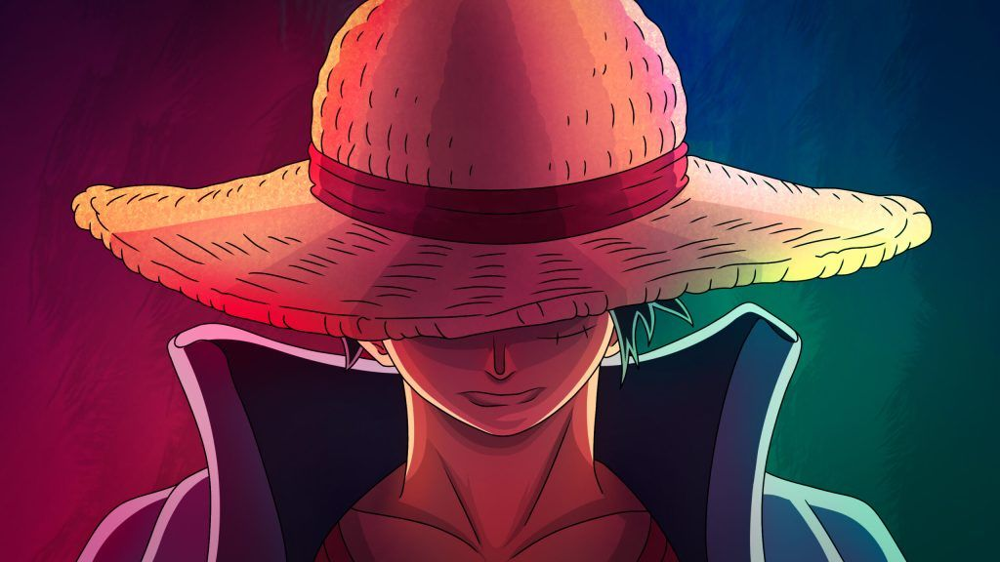
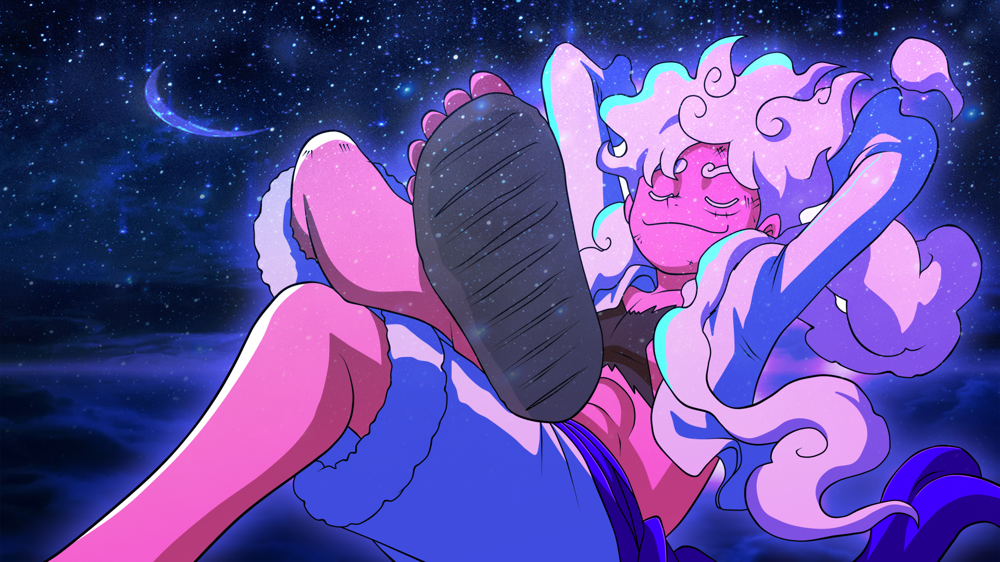
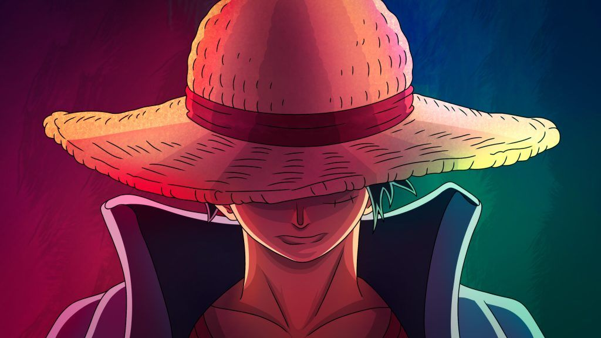
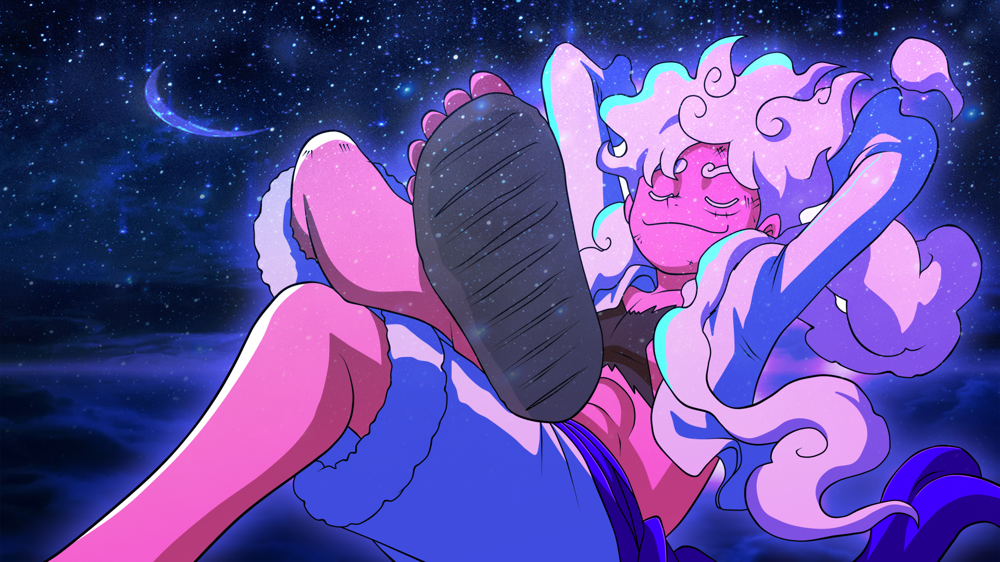

ONE PIECE
Anime que se basa en piratas en busca del tesoro oculto. El ONE PIECE. Al cumplir sus 18 años Luffy se lanza a la gran aventura de convertirse en el rey de los piratas
 Anime referido a la caza de demonios, donde al personaje principal le mata la familia un demonio y ahí arranca el desenlace de la historia
Anime que se basa en piratas en busca del tesoro oculto. El ONE PIECE. Al cumplir sus 18 años Luffy se lanza a la gran aventura de convertirse en el rey de los piratas
 